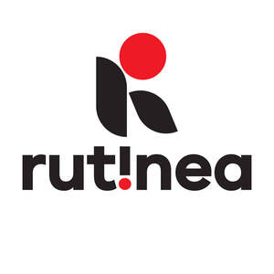

Trade Mark Journal No.2025/039 26 September 2025
UK00004265566 17 September 2025 (9,41,42)

- Class 9
- Education software.
- Class 41
- Education; Education and training; Academies [education]; Education and instruction; Education services; Services of schools [education]; Academy services (Education -); Education academy services; Academy education services; Education, teaching and training; Training and education services; Education and training services; Education and instruction services; Education examination; Educational services for providing courses of education; Provision of education courses; Provision of training and education; Provision of education and training; Providing of education; Entertainment, education and instruction services; Education academy services for teaching languages; Adult education services; Linguistic education and training services; Boarding school education; Further education; Online education services; Lingual education; Research in the field of education; Education services for imparting language teaching methods; Educational and teaching services; Education, entertainment and sports; Education services in the nature of courses at the university level; English language education services; Educational services provided by institutes of further education; Organization of education competitions; Organization of competitions [education or entertainment]; Competitions (Organization of -) [education or entertainment]; Organization of competitions for education or entertainment; Foreign language education services.
- Class 42
- Software as a service [SaaS] featuring software for machine learning; Development of computer software application solutions.
Ruben Barrera a partner in Must Be Spanish
Veronica Lopez a partner in Must Be Spanish
Oscar Gonzalvez a partner in Must Be Spanish